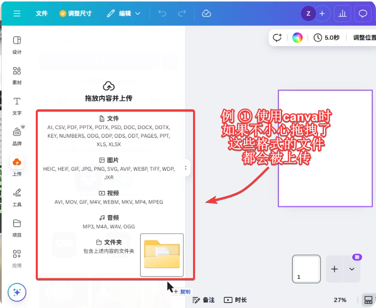
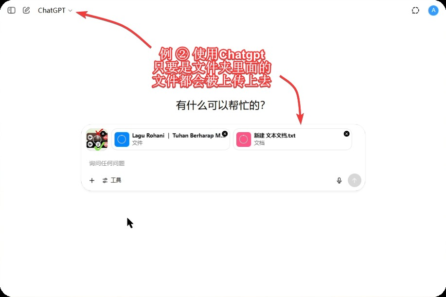

📢防止AI类软件获取隐私文件ℹ️
♨️♨️..最近听说一个安全问题，事例如下：今天有一个姊妹反应：用剪映这个软件从电脑拉了一个素材（D盘）进软件，过了三五分钟再去看，发现电脑‘下载’文件夹和‘D盘’里面所有的素材，包括祷告词、做好的视频、视频素材、图片素材全部都加载进去了。
♨️♨️..据本人所说，用剪映已经几天了，前几天都是正常，拉一个素材就只上传一个素材……
⛑️⛑️..剪映和抖音、微信一样，同属大陆危险软件。如果使用不当，误将内部信息、资料上传，就会造成安全隐患和重要信息泄露的风险。
⛑️⛑️..想到现在有不少弟兄姊妹平时也会使用各类AI网站或软件，在使用这些网站的时候也会涉及到上传图片素材文件等，有些网站支持上传的文件类型比较广泛，如果误操作将内部敏感文件拖上去，就会上传到网站的服务器上，造成敏感信息泄露。所以使用这些网站的时候需要谨慎操作。

👆上面是Canva软件会被上传的文件格式，上传时别上传内部敏感文件、视频、音频。👆

👆上面是chatgpt软件上传时的界面，所有格式都会被上传。👆
对此，有以下几点建议：
① 保持电脑磁盘的整洁干净。敏感文件、不公开的东西放在加密卷里保存，定期整理清理电脑磁盘外面的空间（比如下载、图片、视频文件夹，D盘等）
② 对于剪映这类危险软件\网站，需要专机专用，专门用于危险软件的电脑上不存放敏感信息和文件。如果没有多余的电脑设备，可以安装虚拟机，在虚拟机中使用剪映这类危险软件\网站，虚拟机中只存放需要用到的素材等。 如果电脑配置不高，无法安装虚拟机使用，平时在使用上传素材的时候就得谨慎操作。
③ 对于平常使用的安全网站（比如canva、chatgpt等）这种涉及到上传文件或文件夹的，在上传时也需要检查好，避免将敏感文件上传上去。
✦✦✦